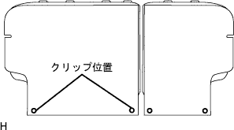
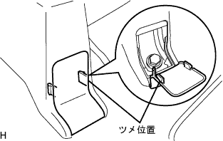
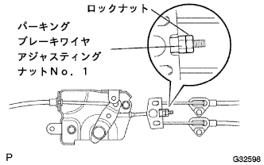
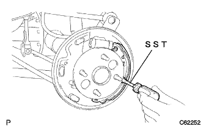

Parking brake cable ASSY No.3 removal |
| 1. Battery minor Starminal Cut off |
| 2. Removable seat back ASSY removed (overall rear seat) |
Make the rear seat Batsuku in an advance.
 |
Remove the clip of the two bolts mounting part.
 |
Turn over the rear seat Batsuku cover, remove the two bolts, and remove the rear seat Batsuku ASSY.
| 3. Remove the rear seat cushion assemble (integrated rear seat) |
Press the lock of the front lock in the direction of the arrow in the figure to remove it.
Pass the rear seat belt through the rear seat cushion cover and pad back rubber band.
 |
Remove the hook at the rear hook at the rear seat cushion assembly, and remove the rear seat cushion assessy.
| 4. Remove the rear seat back hinge SUB-ASSY RH |
 |
Remove the bolt and remove the rear seat Batsuku hinge RH.
| 5. Rena seat back hinge SUB-ASSY LH removed (integrated rear seat) |
Remove the bolt and remove the rear seat Batsuku hinge LH.
| 6. Remove the rear seat back ASSY RH removed (rear seat split can be divided) |
| 7. Remove the rear seat back ASSY LH removed (rear seat split can be split) |
Make the rear seat Batsuku in an advance.
|  |
Remove the clip of the two bolts mounting part.
|
Turn the lower part of the rear seat Batsuku cover, remove the two bolts, and remove the rear seat.
| 8. Remove the rear seat cushion asy (rear seat split can be divided) |
Lock the front side of the rear seat cushion Assy is locked by the rear seat cushion lock striker.
 |
Remove the snap ring from the rear seat back hinge RH.
Rena seat cushion Assy The right bracket is pulled out and remove the rear seat hinge RH.
 |
Remove the bolt and remove the rear -to -hing LH.
Rena seat cushion Assy rear seat hook Assy RH is drawn and the rear seat cushion Assy is removed.
Pass the rear seat belt through the rear seat cushion cover and pad back rubber band.
Remove the rear seat cushion assessy.
| 9. Remove the front seat Assy RH |
Operate the seat track adjusted handle to make the front seat Assike a rear mole.
|  |
Remove the claws of the front seat leg cover and remove the two bolts on the front side.
Operate the seat track adjusted handle to make the front seat associate a front mole.
Remove the claws of the front seat leg cover and remove two bolts on the rear side.
Remove the wire harness and disconnect the connector.
Remove the front sheet Assing RH from the vehicle.
| 10. The front door scuff plate RH is removed |
 |
Pull it up by hand, remove the claws, and remove the front door skirt plate RH.
| 11. Front door opening trim Weather strip RH is removed |
| 12. Rear seat 3 point type belt ASSY OUT RH removed (floor anka part) |
Remove the bolt and remove the rear seat 3 point type belt ASSY OUT RH.
| 13. |
 |
Remove the claws and remove the wrap belt Otaanca cover.
| 14. Front seat Otabelt Assy RH removed (floor anka part) |
Remove the bolt and remove the front seat Outabelt Assy RH (floor anka).
| 15. Side No.1 Trim ASSY RH removed |
 |
Pull it in the inside of the vehicle by hand, remove the clip and claws, and remove the side N O.1 Trim ASSY RH.
| 16. Remove the front floor carpet ASSY FR |
From the front floor sirens pad RH to the front floor sirens paddad RH RH, turn the front floor carpet ASSY FR.
| 17. Remove the floorboard No.1 |
Remove the two clips and remove the No. 1 floorboard.
| 18. |
| 19. Wire gathing nut No.1 loosening |
|  |
Loose the rock nut and the parking brake wire aygnut No.1 No.1 of the parking brake interview interleaver part.
| 20. Parking brake cable ASSY No.3 Cut off |
Parking brake cable No.3 is separated from the parking brake cable equalizer.
| 21. Remove the rear tire |
| 22. Remove the rear brake drum |
 |
Unlock the parking brake and remove the rear brake drum.
| 23. Remove the brake shoe (front) |
 |
Use the SST to cut the tension spring from the brake shoe Assy and remove the parking brake shoe trattle set LH.
 |
Use the SST to remove the rear bra lighse hooded hold down spring cup, rear bra lhape hold hold down spring, and rear bra lighthoeu holddown spring pin.
Cut the rear brake zeuling spring and remove the brake shoe (front).
| 24. Rear brake Automatic adjust lever LH removed |
 |
Remove the rear brake automatic adjustable leverth spring and remove the rear brake automatic adjust lever LH.
| 25. The brake shoe (rear) should be removed |
Remove the rear brake zeewruit spring from the brake shoe (rear).
|  |
Use the SST to remove the rear bra lighse hooded hold down spring cup, rear bra lhape hold hold down spring, and rear bra lighthoeu holddown spring pin.
Use the needle nose pliers to separate the No.3 parking brake cable and remove the brake shoe (rear).
| 26. Parking brake cable ASSY No.3 removed |
Remove six bolts and one nut, and remove each cable bracket of the No.3 parking brake cable from the body.
Remove the bolt and parking cable No.Remove 3 from the backing plate.